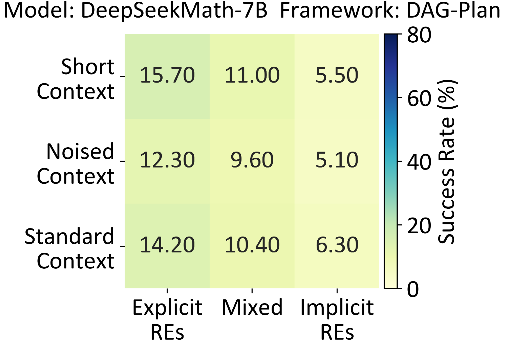
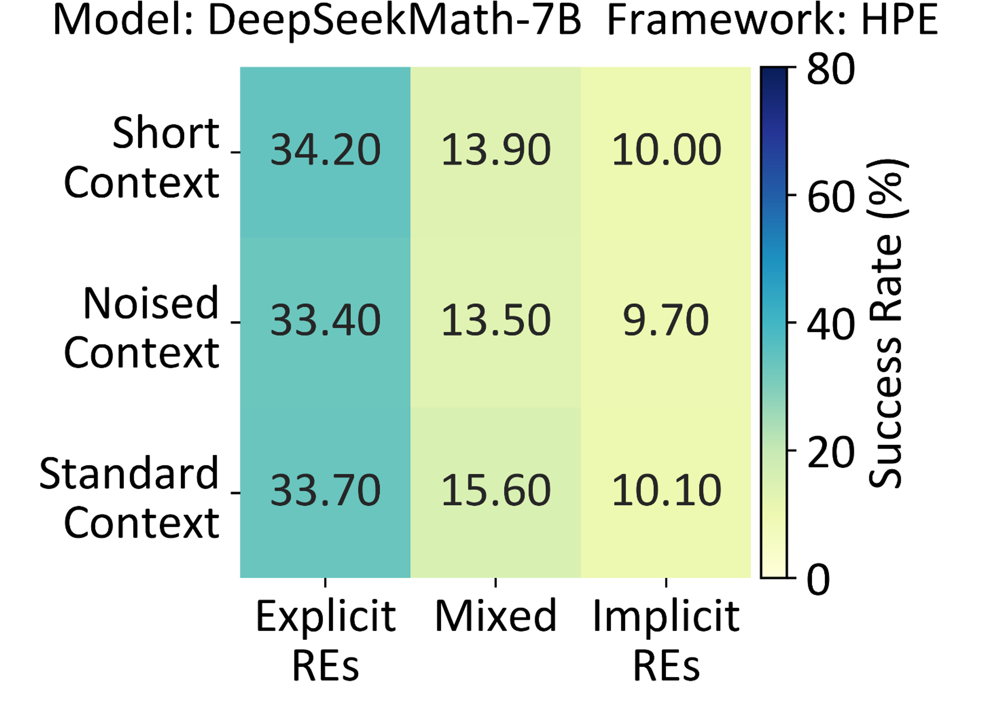

REI-Bench: Can Embodied Agents Understand Vague Human Instructions in Task Planning?

Abstract
Robot task planning decomposes human instructions into executable action sequences that enable robots to complete a series of complex tasks. Although recent large language model (LLM)-based task planners achieve amazing performance, they assume that human instructions are clear and straightforward. However, real-world users are not experts, and their instructions to robots often contain significant vagueness. Linguists suggest that such vagueness frequently arises from referring expressions (REs), whose meanings depend heavily on dialogue context and environment. This vagueness is even more prevalent among the elderly and children, who are the groups that robots should serve more. This paper studies how such vagueness in REs within human instructions affects LLM-based robot task planning and how to overcome this issue. To this end, we propose the first robot task planning benchmark that systematically models vague REs grounded in pragmatic theory (REI-Bench), where we discover that the vagueness of REs can severely degrade robot planning performance, leading to success rate drops of up to 36.9%. We also observe that most failure cases stem from missing objects in planners. To mitigate the REs issue, we propose a simple yet effective approach: task-oriented context cognition, which generates clear instructions for robots, achieving state-of-the-art performance compared to aware prompts, chains of thought, and in-context learning. By tackling the overlooked issue of vagueness, this work contributes to the research community by advancing real-world task planning and making robots more accessible to non-expert users, e.g., the elderly and children.
Motivation
Recent advancements in large language models (LLMs) have significantly improved robots’ ability to follow natural language instructions. However, a key limitation remains: most existing systems operate under the assumption that human instructions are always clear and explicit. In practice, human language is often underspecified. Speakers frequently use referentially vague expressions—such as "it" or "that heavy thing"—with the expectation that the listener will infer the intended meaning from context. While humans are adept at resolving such ambiguity, robots continue to struggle, particularly in complex real-world environments like kitchens, where misinterpretations can lead to task failure. This phenomenon, known as coreferential vagueness, arises when an object is referenced without being explicitly named. For instance, a command like “Move it” may refer to a pot, a plate, or any other nearby item, depending on contextual cues. Although humans rely on memory and situational awareness to resolve these expressions, LLM-based robotic planners often lack the capability to do so reliably.
Method
The objective of our work is to comprehensively evaluate and analyze how different levels of coreferential vagueness from implicit referring expressions affect the planner's performance across diverse multi-turn dialogue contexts. To this end, we first systematically formalize eferring expressions in an HRI context, then establish the REI dataset and benchmark to evaluate planners in embodied tasks involving vague instructions, and finally introduce a simple yet effective solution.

Human-Robot Interaction: from Clarity to Vagueness
Evaluations
Benchmark Result
Existing LLM-based task planners struggle to handle instructions in multi-turn dialogues, particularly when implicit referring expressions introduce vagueness. In contrast, noise and partial context omission have less impact on their performance. These challenges are common in real-world human-robot interactions and need to be addressed.

DeepSeek + DAG-Plan

DeepSeek + HPE
Prompting Method
We evaluate three conventional prompting methods to alleviate coreferential vagueness in robot planning: aware prompt (AP), Chain-of-Thought (CoT), and In-Context Learning (ICL). However, AP remains insufficient as it fails to induce the deep reasoning required for implicit REs, while both CoT and ICL substantially lengthen prompts, hindering performance on resource-constrained onboard hardware. To this end, we propose a simple yet effective method, task-oriented context cognition (TOCC), which decouples RE resolution from the planning process by prompting the planner to resolve implicit REs and rephrase instructions into a concise form before planning.

Among the three prompting methods compared, TOCC achieves the best performance by separating implicit RE resolution from task planning and providing clearer instructions.

Related works
- Jae-Woo Choi, Youngwoo Yoon, Hyobin Ong, Jaehong Kim, Minsu Jang. Lota-bench: Benchmarking language-oriented task planners for embodied agents . International Conference on Learning Representations, 2024.
- SC Levinson. Pragmatics . Cambridge university press, 1983.
BibTeX
@inproceedings{jiang2026reibench,
title={REI-Bench: Can Embodied Agents Understand Vague Human Instructions in Task Planning?},
author={Jiang, Chenxi and Zhou, Chuhao and Yang, Jianfei},
booktitle={The Fourteenth International Conference on Learning Representations},
year={2026},
month={April},
url={https://openreview.net/pdf?id=vmBIF25KLf}
}
@article{jiang2025rei,
title={REI-Bench: Can Embodied Agents Understand Vague Human Instructions in Task Planning?},
author={Jiang, Chenxi and Zhou, Chuhao and Yang, Jianfei},
journal={arXiv preprint arXiv:2505.10872},
year={2025}
}